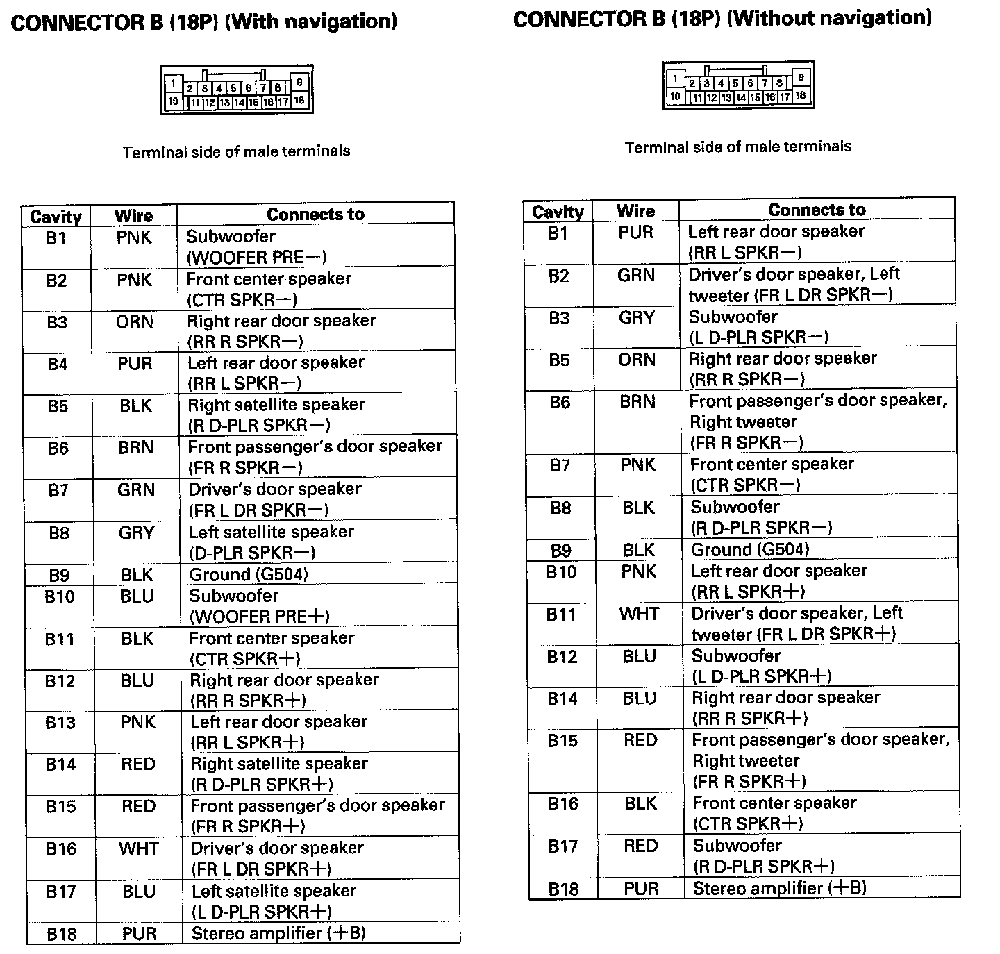
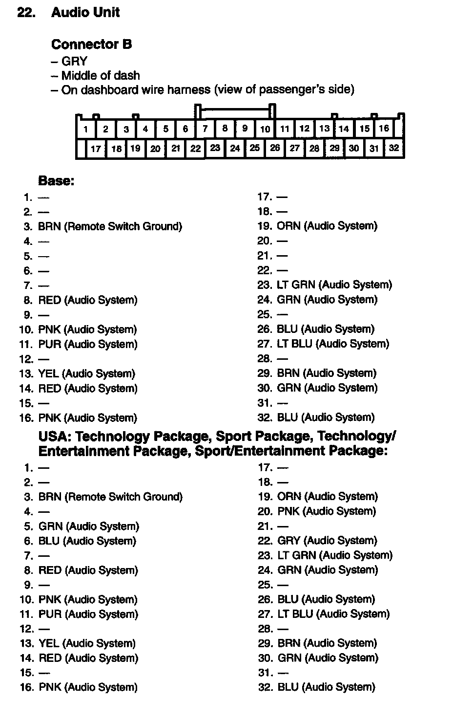

System Diagram
Audio Unit Connector For Inputs And Outputs Part 1:

Audio Unit Connector For Inputs And Outputs Part 2:
Audio Unit Connector For Inputs And Outputs Part 3:
Audio Unit Connector For Inputs And Outputs Part 4:

Audio Unit Connector For Inputs And Outputs Part 5:

Audio Unit Connector For Inputs And Outputs Part 6:
Stereo Amplifier Connector For Inputs And Outputs Part 1:

Stereo Amplifier Connector For Inputs And Outputs Part 2:

Stereo Amplifier Connector For Inputs And Outputs Part 3:

AcuraLink Control Unit (XM Receiver) Connector For Inputs And Outputs (With AcuraLink) Part 1:

AcuraLink Control Unit (XM Receiver) Connector For Inputs And Outputs (With AcuraLink) Part 2:

XM Receiver Connector For Inputs And Outputs (Without AcuraLink):

Interface Dial Connector For Inputs And Outputs:
Auxiliary Jack Assembly Connector For Inputs And Outputs (Without Rear Entertainment):
